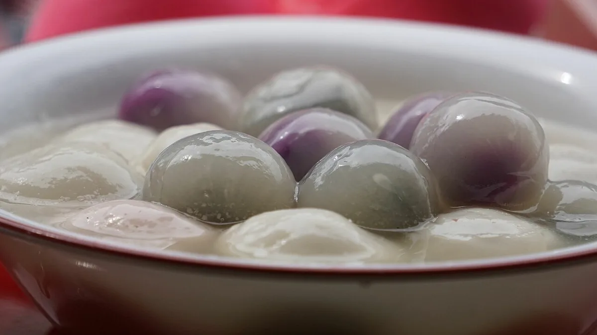
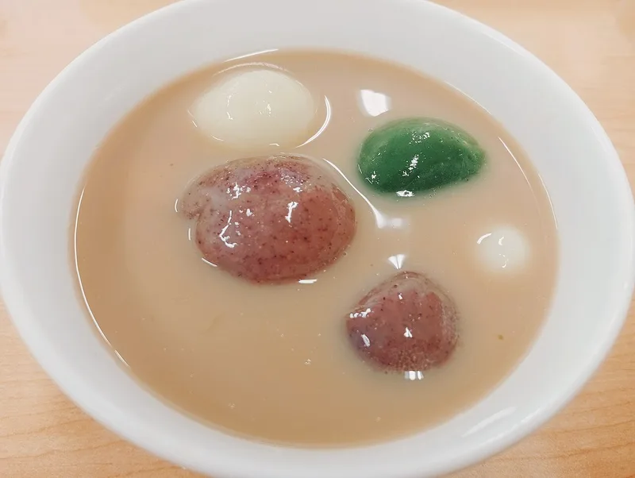

Festival Guide
Dongzhi 2026: The Winter Solstice Festival on 22 December
Dongzhi, the Winter Solstice Festival, is one of the oldest festivals in the Chinese calendar, and in 2026 it falls on Tuesday 22 December. Here is what it is, how its date is set by the sun, the foods families traditionally share, and how it points the way to the coming Lunar New Year.

What is Dongzhi?
Dongzhi is the traditional Chinese festival of the winter solstice. The same name belongs to the 22nd of the 24 solar terms of the Chinese calendar, the one that starts on the day of the solstice. In Chinese, Wikipedia explains, dong means “winter” and zhi means “arrival”.
It is an old festival. Wikipedia says it was first celebrated under the Zhou dynasty and was traditionally a very important holiday, comparable to Chinese New Year.
Chinese families celebrate it around the world, and neighbouring countries keep their own versions of the day, Free Malaysia Today notes. The winter solstice is Tōji in Japan and Đông chí in Vietnam, and in Korea it is also called the “Small Seol”.
How the date is set
Chinese New Year begins with a new moon, but Dongzhi is set by the sun. The traditional calendar marks 24 solar terms, points spaced 15 degrees apart along the sun's yearly path. Dongzhi is the point at 270 degrees: the December solstice, the day with the shortest daylight and the longest night of the year in the Northern Hemisphere.
In the Gregorian calendar it usually begins around 21 December, or 22 December in East Asian time, Wikipedia notes, and the solar term then lasts until around 5 January.
In the philosophy of yin and yang, the solstice is a turning point. From this day on, yang, which stands for warmth and light, grows stronger again, and the days slowly get longer.
The 24 solar terms themselves were listed by UNESCO as Intangible Cultural Heritage on 1 December 2016.
Dongzhi 2026: Tuesday 22 December
In 2026 the December solstice takes place at 20:50 UTC on Monday 21 December, according to the US Naval Observatory's table of the seasons. By then it is already the next morning in Asia: 04:50 on 22 December in Beijing and Hong Kong (UTC+8), and 03:50 on 22 December in Cambodia (UTC+7).
So the Asian date is Tuesday 22 December 2026, the day the Hong Kong Observatory's calendar for 2026 marks as the Winter Solstice. In the Chinese lunar calendar it is the 14th day of the 11th month, a month that began on 9 December 2026.
Because the solstice is a single moment, the date is a day earlier further west. In New York, for example, the 2026 solstice comes at 3:50 pm on 21 December.
Tangyuan, dumplings and other festival foods
Food is at the heart of Dongzhi, and what goes on the table depends on where a family comes from:
- Tangyuan: balls of glutinous rice flour, sometimes coloured pink or green, served in a sweet soup or a savoury broth. They symbolise reunion, and in some families everyone receives one large ball and several small ones, Wikipedia says.
- Dumplings: boiled dumplings (shuijiao) are popular in northern China. A legend says the Han-dynasty physician Zhang Zhongjing started the custom, handing out ear-shaped dumplings of mutton, pepper and herbs to protect poor people's ears from frostbite.
- Warming dishes: hot pot and wontons are common, and in Taiwan the solstice is traditionally seen as the best time for tonic foods such as mutton hot pot and ginger duck.
- Korea: families make a porridge of red beans called patjuk.
In southern China, Free Malaysia Today notes, tangyuan and noodles are the foods most often linked with the festival, and in Malaysia tangyuan is the staple dish of the day.

Family, ancestors and a year older
Dongzhi is above all a family day, when relatives gather for a meal. In Hong Kong, Wikipedia notes, many businesses let employees leave early to spend time with their families.
Many families also make offerings to their ancestors, and traditionally people with the same surname or from the same clan gather at their ancestral temple for a ceremony and a reunion dinner.
There is a popular belief about age, too: many Chinese people, especially older ones, still say that everyone is “a year older” right after Dongzhi, without waiting for Chinese New Year.
Some families keep small superstitions as well, such as sticking offered tangyuan on doors and furniture as a charm to keep evil spirits away from children. Customs like these vary a great deal from region to region and from family to family.
From Dongzhi to Lunar New Year
Dongzhi is also a signpost in the Chinese calendar. The winter solstice must always fall in the 11th month, and the new year starts on the second (or third) new moon after it, as Wikipedia's article on the Chinese calendar explains.
In practice, Dongzhi tells you that Lunar New Year is near. After the solstice on 22 December 2026 comes Lunar New Year on Saturday 6 February 2027, 46 days later. The Year of the Horse ends on 5 February 2027, and the Year of the Fire Goat begins the next day.
Our Lunar New Year guide explains the New Year traditions, and Chinese New Year 2027 looks at the Goat year ahead. Time in the Chinese tradition is also counted in twelve double hours, each with its own animal, as our guide to the zodiac hours explains.
How to mark Dongzhi at home
If you would like to keep the tradition this year, here are some of the ways families traditionally mark the day. Pick what suits your family; there is no single right way.
- Share a meal with family on 22 December, the heart of the festival.
- Make tangyuan together. Making them is a common activity at Dongzhi get-togethers, especially in Asia and in overseas Asian communities, Wikipedia notes. Serve them in a sweet soup.
- Or make dumplings, as many families in northern China do.
- Remember your ancestors with a simple offering, if that is part of your family's custom.
- Welcome the longer days. From the solstice on, the days slowly grow longer, which is why the festival is linked with the return of light and warmth.
Curious about the animal the new year brings, or your own? Find your sign with our zodiac checker.
Frequently asked questions
When is Dongzhi in 2026?
Tuesday 22 December 2026. The solstice itself is at 20:50 UTC on 21 December, which is already 22 December in China and in Cambodia.
Why does the date of Dongzhi change?
It follows the sun, not a fixed calendar date. Dongzhi is the day of the December solstice, when the sun reaches 270 degrees on its yearly path, so it usually falls on 21 or 22 December, depending on the year and the time zone.
What do people eat at Dongzhi?
Tangyuan, glutinous rice balls in soup, are the best-known food, especially in southern China and in Malaysia. In northern China dumplings are popular, and hot pot and wontons are also common.
Is Dongzhi linked to Chinese New Year?
Yes. In the Chinese calendar the winter solstice always falls in the 11th month, and the new year begins on the second (or third) new moon after it. After Dongzhi on 22 December 2026, Lunar New Year falls on 6 February 2027.
Why do people say you are a year older after Dongzhi?
It is a traditional belief: many Chinese people, especially older ones, count everyone a year older right after the festival, instead of waiting for Chinese New Year.
Sources and further reading
- Wikipedia: “Dongzhi” — the festival and solar term, the meaning of the name, the Zhou dynasty and the comparison with Chinese New Year, the Gregorian dates, yin and yang, the names in Japan, Vietnam and Korea, family gatherings in Hong Kong, ancestor offerings, the “year older” belief, tangyuan, shuijiao, the Zhang Zhongjing legend, hot pot and wontons, tonic foods in Taiwan, patjuk and the tangyuan charm.
- US Naval Observatory: “Earth Seasons – Equinoxes and Solstices 2024–2027” (published by the US National Weather Service) — the December solstice of 2026 at 20:50 UT on 21 December (3:50 pm Eastern time).
- Hong Kong Observatory: Gregorian-Lunar Calendar Conversion Table of 2026 — the Winter Solstice on Tuesday 22 December 2026, the 14th day of the 11th lunar month, which begins on 9 December 2026.
- Wikipedia: “Solar term” — the 24 solar terms spaced 15 degrees apart, Dongzhi at 270 degrees, and the UNESCO listing of 1 December 2016.
- Wikiwand (Wikipedia): “Chinese calendar” — the winter solstice always falling in the 11th month, and the new year starting on the second (or third) new moon after it.
- Free Malaysia Today: “What’s the story behind Dongzhi?” by Noel Wong (21 December 2020) — tangyuan as the staple dish in Malaysia, tangyuan and noodles in southern China, the festival in Korea, Japan and Vietnam, and the mutton dumplings of the Zhang Zhongjing legend.
Solstice times follow the US Naval Observatory and the date the Hong Kong Observatory; customs vary by family and region. Photos are from Wikimedia Commons under the free licences named under each picture.
Explore more: Lunar New Year guide · The 12 zodiac hours · Chinese New Year 2027 · The five elements explained
← Back to the MyBirthSign Blogមគ្គុទ្ទេសក៍ពិធីបុណ្យ
បុណ្យ Dongzhi ឆ្នាំ 2026៖ បុណ្យអយនកាលរដូវរងា នៅថ្ងៃទី 22 ខែធ្នូ
បុណ្យ Dongzhi ឬបុណ្យអយនកាលរដូវរងា (Winter Solstice Festival) ជាពិធីបុណ្យមួយក្នុងចំណោមពិធីបុណ្យចាស់ជាងគេ នៃប្រតិទិនចិន ហើយនៅឆ្នាំ 2026 បុណ្យនេះត្រូវនឹងថ្ងៃអង្គារ ទី 22/12/2026។ ខាងក្រោមនេះ ជាការពន្យល់ថា បុណ្យនេះជាអ្វី កាលបរិច្ឆេទរបស់វាកំណត់តាមព្រះអាទិត្យដោយរបៀបណា ម្ហូបអាហារដែលក្រុមគ្រួសារតែងបរិភោគជាមួយគ្នាតាមប្រពៃណី និងរបៀបដែលវាជាសញ្ញាប្រាប់ថា ចូលឆ្នាំចិនខាងមុខជិតមកដល់ហើយ។
តើបុណ្យ Dongzhi ជាអ្វី?
Dongzhi ជាពិធីបុណ្យប្រពៃណីចិន នៃអយនកាលរដូវរងា (winter solstice)។ ឈ្មោះដដែលនេះ ក៏ជាឈ្មោះនៃថ្នាំងអាកាសធាតុទី 22 ក្នុងចំណោម ថ្នាំងអាកាសធាតុ (solar term) ទាំង 24 នៃប្រតិទិនចិនដែរ គឺថ្នាំងដែលចាប់ផ្ដើមនៅថ្ងៃអយនកាលនោះឯង។ យោងតាមការពន្យល់របស់ Wikipedia ក្នុងភាសាចិន dong មានន័យថា «រដូវរងា» ហើយ zhi មានន័យថា «ការមកដល់»។
នេះជាពិធីបុណ្យដែលមានតាំងពីយូរយារណាស់មកហើយ។ Wikipedia សរសេរថា បុណ្យនេះត្រូវបានគេប្រារព្ធជាលើកដំបូង នៅសម័យរាជវង្ស Zhou ហើយតាមប្រពៃណី វាជាថ្ងៃបុណ្យដ៏សំខាន់ណាស់ ដែលអាចប្រៀបធៀបបាននឹងចូលឆ្នាំចិន។
ក្រុមគ្រួសារចិនប្រារព្ធបុណ្យនេះនៅទូទាំងពិភពលោក ហើយប្រទេសជិតខាងក៏មានទម្រង់បុណ្យនេះរៀងៗខ្លួនដែរ នេះបើតាម Free Malaysia Today។ អយនកាលរដូវរងា ហៅថា Tōji នៅប្រទេសជប៉ុន និង Đông chí នៅប្រទេសវៀតណាម ហើយនៅប្រទេសកូរ៉េ គេក៏ហៅវាថា «Seol តូច» (Small Seol) ផងដែរ។
របៀបកំណត់កាលបរិច្ឆេទ
ចូលឆ្នាំចិនចាប់ផ្ដើមនៅថ្ងៃព្រះចន្ទថ្មី (new moon) ប៉ុន្តែបុណ្យ Dongzhi កំណត់តាមព្រះអាទិត្យ។ ប្រតិទិនប្រពៃណីមានថ្នាំងអាកាសធាតុចំនួន 24 ដែលជាចំណុចនៅឃ្លាតពីគ្នា 15 ដឺក្រេ តាមបណ្ដោយគន្លងប្រចាំឆ្នាំរបស់ព្រះអាទិត្យ។ Dongzhi ជាចំណុចនៅ 270 ដឺក្រេ៖ គឺអយនកាលខែធ្នូ ដែលជាថ្ងៃមានពេលថ្ងៃខ្លីជាងគេ និងពេលយប់វែងជាងគេក្នុងឆ្នាំ នៅអឌ្ឍគោលខាងជើង។
Wikipedia កត់សម្គាល់ថា ក្នុងប្រតិទិនគ្រិស្តសករាជ (Gregorian) ថ្នាំងនេះជាធម្មតាចាប់ផ្ដើមប្រហែលថ្ងៃទី 21 ខែធ្នូ ឬថ្ងៃទី 22 ខែធ្នូ តាមម៉ោងអាស៊ីបូព៌ា ហើយថ្នាំងអាកាសធាតុនេះ បន្តរហូតដល់ប្រហែលថ្ងៃទី 5 ខែមករា។
ក្នុងទស្សនវិជ្ជាយិន និងយ៉ាង អយនកាលជាចំណុចបត់មួយ។ ចាប់ពីថ្ងៃនេះតទៅ យ៉ាង ដែលតំណាងឱ្យភាពកក់ក្ដៅ និងពន្លឺ ចាប់ផ្ដើមខ្លាំងឡើងវិញ ហើយពេលថ្ងៃក៏វែងជាងមុនបន្តិចម្ដងៗ។
ថ្នាំងអាកាសធាតុទាំង 24 ខ្លួនឯង ត្រូវបាន UNESCO ចុះក្នុងបញ្ជីបេតិកភណ្ឌវប្បធម៌អរូបី នៅថ្ងៃទី 01/12/2016។
បុណ្យ Dongzhi ឆ្នាំ 2026៖ ថ្ងៃអង្គារ ទី 22/12/2026
នៅឆ្នាំ 2026 អយនកាលខែធ្នូ កើតឡើងនៅម៉ោង 20:50 UTC ថ្ងៃច័ន្ទ ទី 21/12/2026 យោងតាមតារាងរដូវកាលរបស់ US Naval Observatory (ការិយាល័យតារាសាស្ត្រនៃកងទ័ពជើងទឹកសហរដ្ឋអាមេរិក)។ នៅពេលនោះ នៅអាស៊ីគឺជាព្រឹកថ្ងៃបន្ទាប់ទៅហើយ៖ ម៉ោង 04:50 ថ្ងៃទី 22/12/2026 នៅទីក្រុងប៉េកាំង និងហុងកុង (UTC+8) និងម៉ោង 03:50 ថ្ងៃទី 22/12/2026 នៅកម្ពុជា (UTC+7)។
ដូច្នេះ កាលបរិច្ឆេទនៅអាស៊ី គឺ ថ្ងៃអង្គារ ទី 22/12/2026 ដែលជាថ្ងៃដែលប្រតិទិនឆ្នាំ 2026 របស់ Hong Kong Observatory កត់ត្រាថាជាថ្ងៃអយនកាលរដូវរងា (Winter Solstice)។ ក្នុងប្រតិទិនចន្ទគតិចិន ថ្ងៃនោះជាថ្ងៃទី 14 នៃខែទី 11 ដែលជាខែចាប់ផ្ដើមនៅថ្ងៃទី 09/12/2026។
ដោយសារអយនកាលជាពេលវេលាតែមួយ កាលបរិច្ឆេទនៅតំបន់ខាងលិចឆ្ងាយ គឺមុនមួយថ្ងៃ។ ឧទាហរណ៍ នៅទីក្រុងញូវយ៉ក អយនកាលឆ្នាំ 2026 មកដល់នៅម៉ោង 15:50 ថ្ងៃទី 21/12/2026។
Tangyuan នំគាវ និងម្ហូបអាហារផ្សេងទៀតពេលបុណ្យ
ម្ហូបអាហារ ជាបេះដូងនៃបុណ្យ Dongzhi ហើយអ្វីដែលដាក់លើតុ អាស្រ័យលើស្រុកកំណើតរបស់ក្រុមគ្រួសារនីមួយៗ៖
- Tangyuan៖ នំគ្រាប់ម្សៅដំណើបរាងមូល ដែលពេលខ្លះលាយពណ៌ផ្កាឈូក ឬពណ៌បៃតង ហើយគេបរិភោគជាមួយទឹកស៊ុបផ្អែម ឬស៊ុបប្រៃ។ Wikipedia និយាយថា នំនេះជានិមិត្តរូបនៃការជួបជុំគ្នា ហើយក្នុងគ្រួសារខ្លះ សមាជិកម្នាក់ៗទទួលបានគ្រាប់ធំមួយ និងគ្រាប់តូចៗជាច្រើន។
- នំគាវ (dumplings)៖ នំគាវស្ងោរ (shuijiao) មានប្រជាប្រិយភាពនៅភាគខាងជើងប្រទេសចិន។ រឿងព្រេងមួយនិយាយថា គ្រូពេទ្យ Zhang Zhongjing នៃសម័យរាជវង្ស Han ជាអ្នកចាប់ផ្ដើមទំនៀមនេះ ដោយចែកនំគាវរាងដូចត្រចៀក ដែលមានសាច់ចៀម ម្រេច និងរុក្ខជាតិឱសថ ដើម្បីការពារត្រចៀករបស់អ្នកក្រីក្រ កុំឱ្យរងរបួសដោយសារភាពត្រជាក់ខ្លាំង។
- ម្ហូបកក់ក្ដៅ៖ ស៊ុបឆ្នាំងភ្លើង (hot pot) និងគាវស៊ុប (wontons) ជាម្ហូបទូទៅ ហើយនៅតៃវ៉ាន់ តាមប្រពៃណី គេចាត់ទុកអយនកាលរដូវរងា ជាពេលល្អបំផុតសម្រាប់ម្ហូបប៉ូវកម្លាំង ដូចជាស៊ុបឆ្នាំងភ្លើងសាច់ចៀម និងទាខ្ញី។
- កូរ៉េ៖ ក្រុមគ្រួសារធ្វើបបរសណ្ដែកក្រហម ដែលហៅថា patjuk។
យោងតាម Free Malaysia Today នៅភាគខាងត្បូងប្រទេសចិន tangyuan និងមី ជាម្ហូបដែលគេភ្ជាប់ជាមួយបុណ្យនេះច្រើនជាងគេ ហើយនៅម៉ាឡេស៊ី tangyuan ជាម្ហូបចម្បងនៃថ្ងៃបុណ្យនេះ។
គ្រួសារ ដូនតា និងអាយុកើនមួយឆ្នាំ
បុណ្យ Dongzhi ជាថ្ងៃគ្រួសារជាងអ្វីទាំងអស់ ដែលសាច់ញាតិមកជួបជុំហូបបាយជាមួយគ្នា។ Wikipedia កត់សម្គាល់ថា នៅហុងកុង ក្រុមហ៊ុនជាច្រើនអនុញ្ញាតឱ្យបុគ្គលិកចេញពីការងារលឿនជាងធម្មតា ដើម្បីទៅចំណាយពេលជាមួយក្រុមគ្រួសារ។
ក្រុមគ្រួសារជាច្រើនក៏សែនព្រេនដូនតាផងដែរ ហើយតាមប្រពៃណី អ្នកដែលមាននាមត្រកូលដូចគ្នា ឬមកពីត្រកូលតែមួយ ជួបជុំគ្នានៅវិហារដូនតារបស់ខ្លួន ដើម្បីធ្វើពិធី និងហូបអាហារជុំគ្នា។
មានជំនឿប្រជាប្រិយមួយទាក់ទងនឹងអាយុផងដែរ៖ ជនជាតិចិនជាច្រើន ជាពិសេសមនុស្សចាស់ នៅតែនិយាយថា មនុស្សគ្រប់គ្នា «ចាស់មួយឆ្នាំទៀត» ភ្លាមៗក្រោយបុណ្យ Dongzhi ដោយមិនរង់ចាំដល់ចូលឆ្នាំចិនទេ។
ក្រុមគ្រួសារខ្លះក៏មានជំនឿតូចៗផ្សេងទៀតដែរ ដូចជាយក tangyuan ដែលបានសែនរួច ទៅបិទលើទ្វារ និងគ្រឿងសង្ហារិម ជាគ្រឿងការពារ ដើម្បីបណ្ដេញវិញ្ញាណអាក្រក់ឱ្យឆ្ងាយពីកុមារ។ ទំនៀមទម្លាប់បែបនេះ ខុសគ្នាច្រើនពីតំបន់មួយទៅតំបន់មួយ និងពីគ្រួសារមួយទៅគ្រួសារមួយ។
ពីបុណ្យ Dongzhi ដល់ចូលឆ្នាំចិន
បុណ្យ Dongzhi ក៏ជាសញ្ញាសម្គាល់មួយក្នុងប្រតិទិនចិនដែរ។ ដូចដែលអត្ថបទស្ដីពីប្រតិទិនចិនរបស់ Wikipedia ពន្យល់ អយនកាលរដូវរងា ត្រូវតែធ្លាក់ក្នុងខែទី 11 ជានិច្ច ហើយឆ្នាំថ្មីចាប់ផ្ដើមនៅថ្ងៃព្រះចន្ទថ្មីលើកទីពីរ (ឬលើកទីបី) ក្រោយអយនកាលនោះ។
តាមការអនុវត្តជាក់ស្ដែង បុណ្យ Dongzhi ប្រាប់យើងថា ចូលឆ្នាំចិនជិតមកដល់ហើយ។ ក្រោយអយនកាលនៅថ្ងៃទី 22/12/2026 ចូលឆ្នាំចិននឹងមកដល់នៅ ថ្ងៃសៅរ៍ ទី 06/02/2027 គឺ 46 ថ្ងៃក្រោយមក។ ឆ្នាំមមី បញ្ចប់នៅថ្ងៃទី 05/02/2027 ហើយឆ្នាំមមែ ធាតុភ្លើង ចាប់ផ្ដើមនៅថ្ងៃបន្ទាប់។
មគ្គុទ្ទេសក៍ចូលឆ្នាំចិន របស់យើង ពន្យល់ពីប្រពៃណីចូលឆ្នាំ ហើយអត្ថបទ ចូលឆ្នាំចិន 2027 មើលទៅលើឆ្នាំមមែខាងមុខ។ ក្នុងប្រពៃណីចិន ពេលវេលាក៏ត្រូវបានរាប់ជាដប់ពីរវេន វេនមួយមានពីរម៉ោង ហើយវេននីមួយៗមានសត្វរាសីរៀងៗខ្លួន ដូចដែលមគ្គុទ្ទេសក៍ស្ដីពី ម៉ោងរាសី របស់យើងពន្យល់។
របៀបប្រារព្ធបុណ្យ Dongzhi នៅផ្ទះ
បើអ្នកចង់រក្សាប្រពៃណីនេះនៅឆ្នាំនេះ ខាងក្រោមនេះជាវិធីមួយចំនួន ដែលក្រុមគ្រួសារតែងប្រារព្ធថ្ងៃនេះតាមប្រពៃណី។ សូមជ្រើសរើសអ្វីដែលសមនឹងគ្រួសាររបស់អ្នក ព្រោះគ្មានវិធីណាមួយដែលត្រឹមត្រូវតែមួយនោះទេ។
- ហូបបាយជុំគ្រួសារ នៅថ្ងៃទី 22/12/2026 ដែលជាបេះដូងនៃពិធីបុណ្យ។
- ធ្វើ tangyuan ជាមួយគ្នា។ Wikipedia កត់សម្គាល់ថា ការធ្វើនំនេះ ជាសកម្មភាពទូទៅពេលជួបជុំគ្នាក្នុងបុណ្យ Dongzhi ជាពិសេសនៅអាស៊ី និងក្នុងសហគមន៍អាស៊ីនៅក្រៅប្រទេស។ បន្ទាប់មក ដាក់វាក្នុងទឹកស៊ុបផ្អែម។
- ឬធ្វើនំគាវ ដូចក្រុមគ្រួសារជាច្រើននៅភាគខាងជើងប្រទេសចិនធ្វើ។
- រំលឹកដល់ដូនតា ដោយការសែនព្រេនសាមញ្ញមួយ ប្រសិនបើវាជាផ្នែកមួយនៃទំនៀមគ្រួសាររបស់អ្នក។
- ស្វាគមន៍ពេលថ្ងៃដែលវែងជាងមុន។ ចាប់ពីអយនកាលតទៅ ពេលថ្ងៃវែងឡើងបន្តិចម្ដងៗ ហេតុនេះហើយបានជាបុណ្យនេះ ត្រូវបានភ្ជាប់ជាមួយការវិលត្រឡប់មកវិញនៃពន្លឺ និងភាពកក់ក្ដៅ។
ចង់ដឹងពីសត្វរាសីដែលឆ្នាំថ្មីនាំមក ឬរាសីរបស់អ្នកផ្ទាល់ទេ? ស្វែងរករាសីរបស់អ្នកជាមួយ កម្មវិធីពិនិត្យរាសី របស់យើង។
សំណួរដែលគេសួរញឹកញាប់
តើបុណ្យ Dongzhi ឆ្នាំ 2026 ត្រូវនឹងថ្ងៃណា?
ថ្ងៃអង្គារ ទី 22/12/2026។ ពេលអយនកាលពិតប្រាកដ គឺម៉ោង 20:50 UTC ថ្ងៃទី 21/12/2026 ដែលនៅប្រទេសចិន និងនៅកម្ពុជា គឺជាថ្ងៃទី 22/12/2026 រួចទៅហើយ។
ហេតុអ្វីបានជាកាលបរិច្ឆេទនៃបុណ្យ Dongzhi ផ្លាស់ប្ដូរ?
វាអនុវត្តតាមព្រះអាទិត្យ មិនមែនតាមកាលបរិច្ឆេទថេរក្នុងប្រតិទិនទេ។ Dongzhi ជាថ្ងៃអយនកាលខែធ្នូ ពេលដែលព្រះអាទិត្យទៅដល់ 270 ដឺក្រេ លើគន្លងប្រចាំឆ្នាំរបស់វា ដូច្នេះជាធម្មតាវាត្រូវនឹងថ្ងៃទី 21 ឬ 22 ខែធ្នូ អាស្រ័យលើឆ្នាំ និងល្វែងម៉ោង។
តើគេបរិភោគអ្វីខ្លះនៅបុណ្យ Dongzhi?
Tangyuan ឬនំគ្រាប់ម្សៅដំណើបក្នុងទឹកស៊ុប ជាម្ហូបល្បីជាងគេ ជាពិសេសនៅភាគខាងត្បូងប្រទេសចិន និងនៅម៉ាឡេស៊ី។ នៅភាគខាងជើងប្រទេសចិន នំគាវមានប្រជាប្រិយភាព ហើយស៊ុបឆ្នាំងភ្លើង និងគាវស៊ុប (wontons) ក៏ជាម្ហូបទូទៅដែរ។
តើបុណ្យ Dongzhi ទាក់ទងនឹងចូលឆ្នាំចិនដែរឬទេ?
ទាក់ទង។ ក្នុងប្រតិទិនចិន អយនកាលរដូវរងា ធ្លាក់ក្នុងខែទី 11 ជានិច្ច ហើយឆ្នាំថ្មីចាប់ផ្ដើមនៅថ្ងៃព្រះចន្ទថ្មីលើកទីពីរ (ឬលើកទីបី) ក្រោយវា។ ក្រោយបុណ្យ Dongzhi នៅថ្ងៃទី 22/12/2026 ចូលឆ្នាំចិនត្រូវនឹងថ្ងៃទី 06/02/2027។
ហេតុអ្វីបានជាគេនិយាយថា អ្នកចាស់មួយឆ្នាំទៀតក្រោយបុណ្យ Dongzhi?
នេះជាជំនឿតាមប្រពៃណី៖ ជនជាតិចិនជាច្រើន ជាពិសេសមនុស្សចាស់ រាប់មនុស្សគ្រប់គ្នាថាចាស់មួយឆ្នាំទៀត ភ្លាមៗក្រោយពិធីបុណ្យនេះ ដោយមិនរង់ចាំដល់ចូលឆ្នាំចិនទេ។
ប្រភព និងឯកសារអានបន្ថែម
- Wikipedia: “Dongzhi” — ពិធីបុណ្យ និងថ្នាំងអាកាសធាតុ អត្ថន័យនៃឈ្មោះ សម័យរាជវង្ស Zhou និងការប្រៀបធៀបជាមួយចូលឆ្នាំចិន កាលបរិច្ឆេទក្នុងប្រតិទិនគ្រិស្តសករាជ យិន និងយ៉ាង ឈ្មោះនៅជប៉ុន វៀតណាម និងកូរ៉េ ការជួបជុំគ្រួសារនៅហុងកុង ការសែនព្រេនដូនតា ជំនឿ «ចាស់មួយឆ្នាំទៀត» tangyuan, shuijiao រឿងព្រេង Zhang Zhongjing ស៊ុបឆ្នាំងភ្លើង និងគាវស៊ុប ម្ហូបប៉ូវកម្លាំងនៅតៃវ៉ាន់ patjuk និងការប្រើ tangyuan ជាគ្រឿងការពារ។
- US Naval Observatory: “Earth Seasons – Equinoxes and Solstices 2024–2027” (published by the US National Weather Service) — អយនកាលខែធ្នូ ឆ្នាំ 2026 នៅម៉ោង 20:50 UT ថ្ងៃទី 21/12/2026 (ម៉ោង 15:50 តាមម៉ោងភាគខាងកើតសហរដ្ឋអាមេរិក)។
- Hong Kong Observatory: Gregorian-Lunar Calendar Conversion Table of 2026 — ថ្ងៃអយនកាលរដូវរងា នៅថ្ងៃអង្គារ ទី 22/12/2026 ដែលជាថ្ងៃទី 14 នៃខែចន្ទគតិទី 11 ហើយខែនោះចាប់ផ្ដើមនៅថ្ងៃទី 09/12/2026។
- Wikipedia: “Solar term” — ថ្នាំងអាកាសធាតុទាំង 24 ដែលនៅឃ្លាតពីគ្នា 15 ដឺក្រេ Dongzhi នៅ 270 ដឺក្រេ និងការចុះបញ្ជីរបស់ UNESCO នៅថ្ងៃទី 01/12/2016។
- Wikiwand (Wikipedia): “Chinese calendar” — អយនកាលរដូវរងា ដែលធ្លាក់ក្នុងខែទី 11 ជានិច្ច និងឆ្នាំថ្មីដែលចាប់ផ្ដើមនៅថ្ងៃព្រះចន្ទថ្មីលើកទីពីរ (ឬលើកទីបី) ក្រោយអយនកាលនោះ។
- Free Malaysia Today: “What’s the story behind Dongzhi?” by Noel Wong (21 December 2020) — tangyuan ជាម្ហូបចម្បងនៅម៉ាឡេស៊ី tangyuan និងមីនៅភាគខាងត្បូងប្រទេសចិន ពិធីបុណ្យនេះនៅកូរ៉េ ជប៉ុន និងវៀតណាម និងនំគាវសាច់ចៀមក្នុងរឿងព្រេង Zhang Zhongjing។
ពេលវេលាអយនកាល អនុវត្តតាម US Naval Observatory ហើយកាលបរិច្ឆេទ អនុវត្តតាម Hong Kong Observatory។ ទំនៀមទម្លាប់ខុសគ្នាទៅតាមគ្រួសារ និងតំបន់។ រូបថតមកពី Wikimedia Commons ក្រោមអាជ្ញាប័ណ្ណសេរី ដែលបានបញ្ជាក់នៅក្រោមរូបនីមួយៗ។
អានបន្ថែម៖ មគ្គុទ្ទេសក៍ចូលឆ្នាំចិន · ម៉ោងរាសីទាំង 12 · ចូលឆ្នាំចិន 2027 · ពន្យល់ពីធាតុទាំងប្រាំ
← ត្រឡប់ទៅប្លុក MyBirthSign